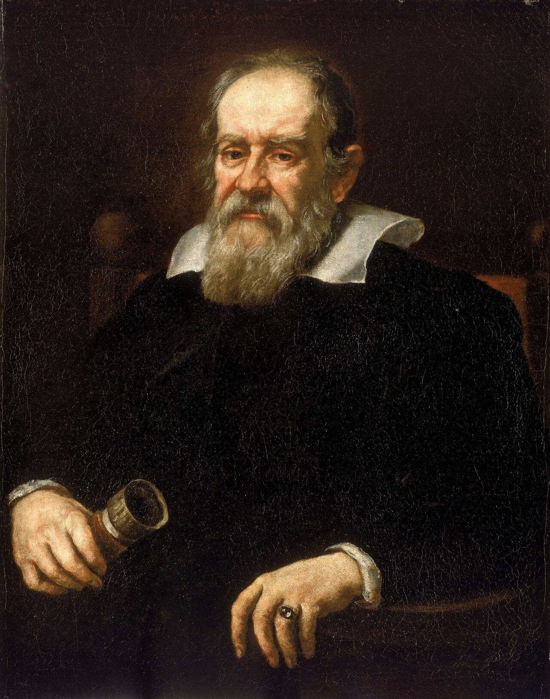

四大成就
他最厉害的四件事
点任意一张卡片，进入图文详解；看不懂的词，随时点开弹窗。
点任意一张卡片，进入图文详解；看不懂的词，随时点开弹窗。

伽利略·伽利雷（1564—1642），意大利比萨人。他不是那种“从小门门第一”的模板：大学没读完，偏科严重，还一度被嘲笑。真正让他爆发的，是对“亲眼所见+亲手可测”的执拗。
他用望远镜把人类的眼睛延伸到星空，又用斜面、摆和数学把“运动”从哲学玄谈变成可计算的规律。晚年因支持日心说被教会审判、软禁，却在囚室里写出了开启近代物理学的封笔之作。
面向中学生的科普小站：按时间顺序讲故事，把难词讲成人话。每个核心概念都能点开弹窗看通俗解释；想深入就读“详解页”；想动手就玩“实验”；不确定哪个词什么意思，去词典里搜。